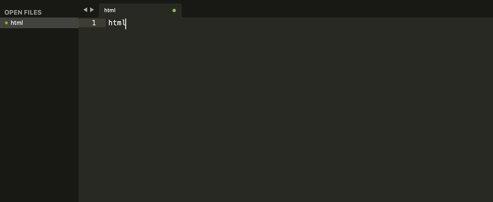
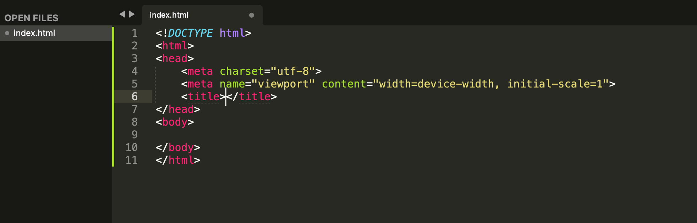
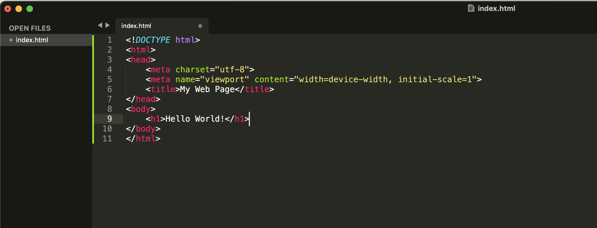

Module 2: Web Design Tools and Software
Introduction to Web Design Tools and Software
Lesson Topics
Introduction to Web Design Tools and Software
Design
Web design tools and software are essential for creating websites. These tools include programs and applications that assist designers with tasks like layout design, graphic editing, and coding.
The right tools' importance cannot be overstated. The right tools can make the web design process more efficient and can result in a better user experience for website visitors.
Different tools are suited to different aspects of web design. Tools like Adobe XD and Figmaare popular for visual design. These tools allow designers to create layouts, graphics, and prototypes.
Coding
Tools like Sublime Text and Visual Studio Code are commonly used for coding. These tools provide features like syntax highlighting, code completion, and project management, which can greatly enhance a developer's workflow.
Using the right tools for each task, web designers can create visually appealing but also functional and user-friendly websites. In this course, we will use Figma and Sublime Text.
Figma
Figma is a cloud-based design tool that has gained popularity for its ease of use and powerful features for designing user interfaces and interactive prototypes. One of its key features is real-time collaboration, allowing multiple users to work on the same design project simultaneously. This makes it ideal for teams working on web design projects, as it streamlines the collaboration process and ensures everyone is on the same page.
Figma's interface is intuitive, making it accessible to experienced designers and beginners. It offers a wide range of tools for creating and editing designs, including vector graphics tools, prototyping tools, and various pre-made design elements. Designers can create high-fidelity prototypes that closely resemble the final product, allowing for thorough testing and iteration before development begins.
Another advantage of Figma is its cross-platform compatibility, as it can be accessed via a web browser or through desktop applications for Windows and macOS. This allows designers to work from anywhere, making it a flexible and convenient tool for modern design teams.
Introducing Figma: A Beginners Tutorial (31:37)
Living with Pixels
Getting Started with Figma: A Quick Guide
Sublime Text
Sublime Text is a sophisticated text editor widely used by developers for writing code, markup, and prose. It offers a sleek, minimalist interface that is highly customizable, allowing users to tailor the editor to their preferences with themes and plugins. Sublime Text is known for its speed and responsiveness, making it a favorite among developers with large codebases.
One of Sublime Text's key features is its powerful and efficient workflow. It includes features like multiple selections, which allow you to select and edit multiple parts of your code simultaneously, and a command palette, which provides quick access to various commands and settings. These features help streamline the coding process and improve productivity.
Sublime Text also offers a wide range of plugins and packages that extend its functionality. These plugins can add features like syntax highlighting for different programming languages, code linting, version control integration, and much more. This extensibility makes Sublime Text a versatile tool that can be customized to suit different coding workflows and preferences.
Overall, Sublime Text is a popular choice among developers for its speed, flexibility, and extensive feature set, making it a powerful tool for writing code and managing projects.
Learn How to Use Sublime Text: A Quick Overview (9:13)
Living with Pixels
Overview of HTML and CSS
HTML (HyperText Markup Language) and CSS (Cascading Style Sheets) are two fundamental languages used in web design and development.
HTML
HTML is used to create the structure and content of web pages. It consists of elements, such as headings, paragraphs, images, and links, enclosed in tags. HTML tags define the different parts of a web page and how they should be displayed in a web browser.
CSS
CSS is used to style the appearance of web pages. It allows developers to control the layout, colors, fonts, and other visual aspects of a web page. CSS works by targeting HTML elements and applying styling rules to them, which can be defined in a separate CSS file or within the HTML file itself.
A basic HTML structure consists of the following elements:
<!DOCTYPE html>: Declares the document type and version of HTML being used (HTML5 in this case).
<html>: The root element of an HTML page. Contains all other HTML elements.
<head>: Contains meta-information about the document, such as the page title and links to external resources like stylesheets and scripts.
<title>: Sets the title of the HTML document, which appears in the browser tab.
<body>: Contains the content of the HTML document, such as text, images, links, and other elements displayed on the page.
Creating a basic HTML structure
- Open Sublime Text and create a new file.
- Go the File, Select SAVE AS and name the file "index.html"
- Use the following code to create a basic HTML structure:
Type HTML, then select the tab key, creating a basic HTML structure
 - Name
<title>"My First Web Page"
 - In the
<body>add the text "<h1>Hello World!</h1>"

This work is licensed under CC BY-NC 4.0